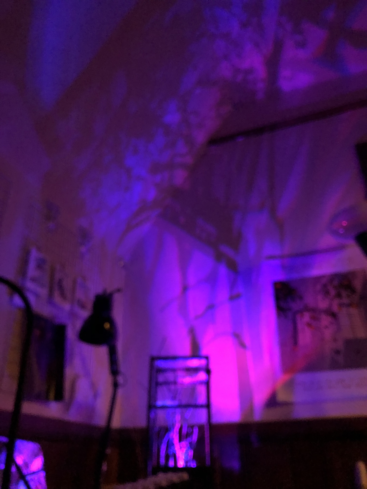
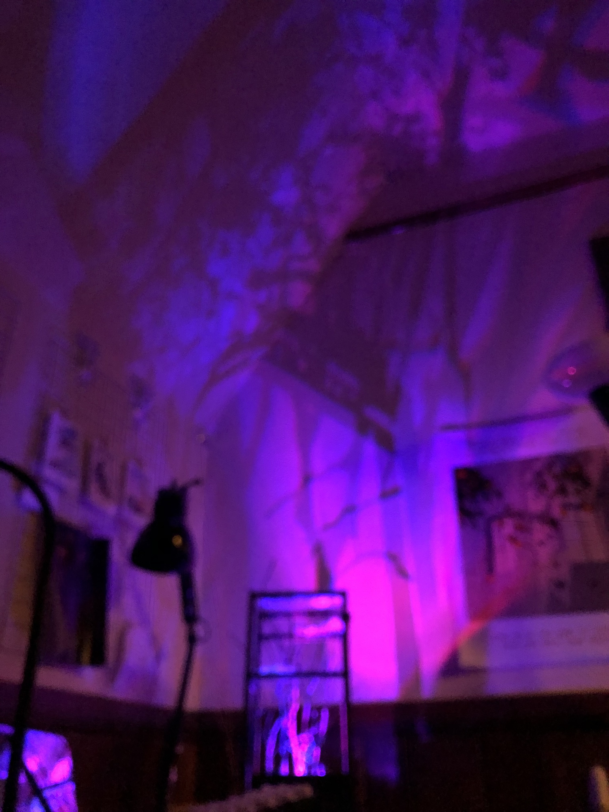

INTERVALS
[Github Repo] [Notion writeup]
 

Intervals is an interactive projection system, which, as an homage to the films of Hayao Miyazaki, strives to embody a free relation to technology in the spirit of the “animetic” image as well as machine-aided multiplanar image crafting in general. This work references the writings of Thomas Lamarre on Miyazaki. In his book The Anime Machine, argues that all media can exhibit “cinematic” and “animetic” tendencies. While cinematism entails a “ballistic” mode of perception that that “align[s] a camera with a projectile that moves through space,” emphasizing one-point-perspective and privileging “a single subject ordering the world into motion,” animetism separates an image into planes, emphasizing movement on and between these surfaces. The distance between these surfaces is termed “the animetic interval.” How this materializes in Miyazaki’s films, some of which are hailed as environmentalist epics, is that he envisions alternative ways of moving through and relating to space, ways of living with nature that aren’t just conquering.
Miyazaki’s films often feature the motif of flight and flying machines, as a subset of his commentary on technology and the relationship between humans and nature. In short, he sees machines of flight as capable of both inspiring wonder and of being used for mass destruction, as facilitators of WMDs.
Intervals echoes these motifs of flight and the natural world, enabling a way of interacting with its projection that relies on proximity sensing, rather than touch. Through monitoring ambient light levels, the sensor pad detects which region of its surface, corresponding to the cardinal directions, that a person is hovering over with their hand. The projected image shifts between day and night modes in intervals of 30 seconds, based on clock time. At night, an animated bird traverses across a starfield, and depending on where one is hovering over the sensor pad, the bird may shift direction in its flight path. This projection comes down upon a sculpture emulating a forest. As the projected light shines down, LED lights shine upwards from the base of the forest, through the translucent leaf layers, illuminating the wooden frame of its structure. In total darkness, a shadow image of the forest will be projected onto nearby surfaces. In the spirit of stop-motion and multiplanar-camera setups for animation, it is possible also to insert a camera between the leaf layers of the forest frame to take some photographs which, due to the ever-changing quality of LED light, are never quite the same.
More images in the Notion writeup!